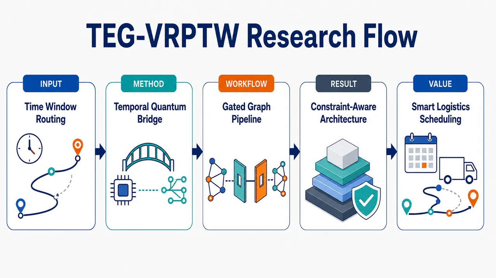
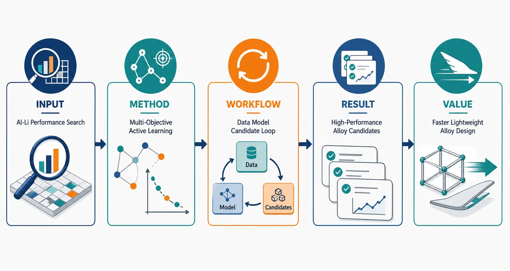
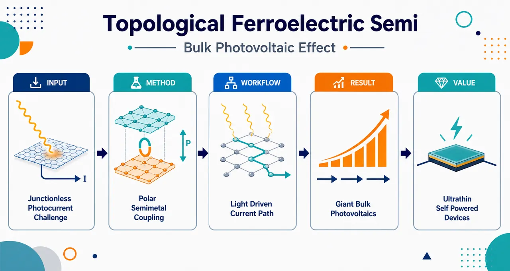
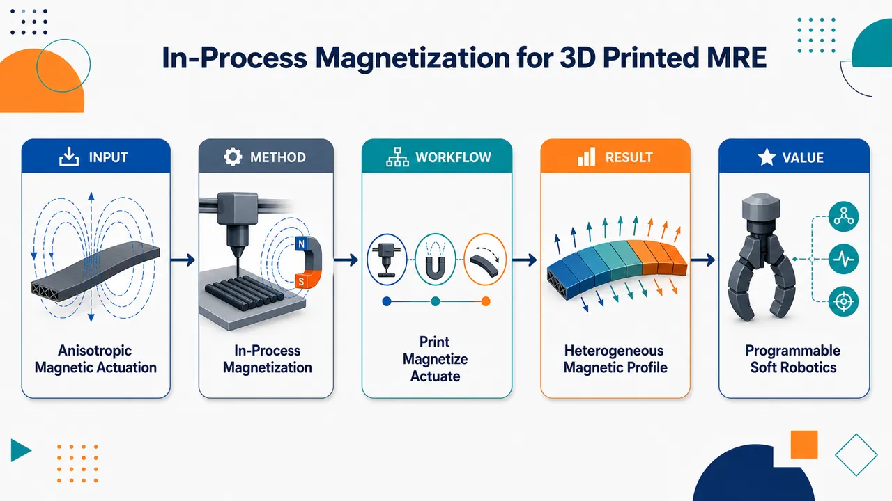
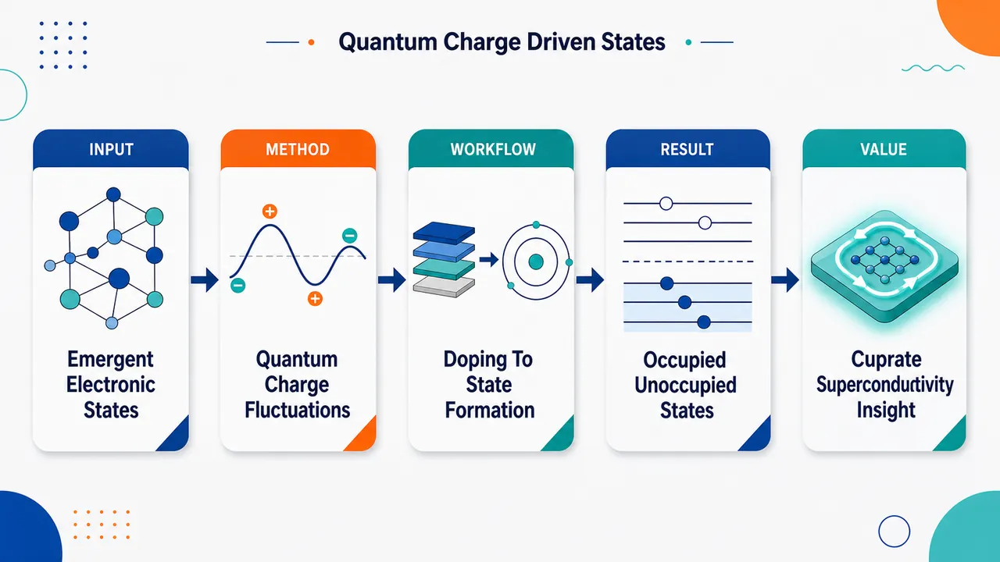
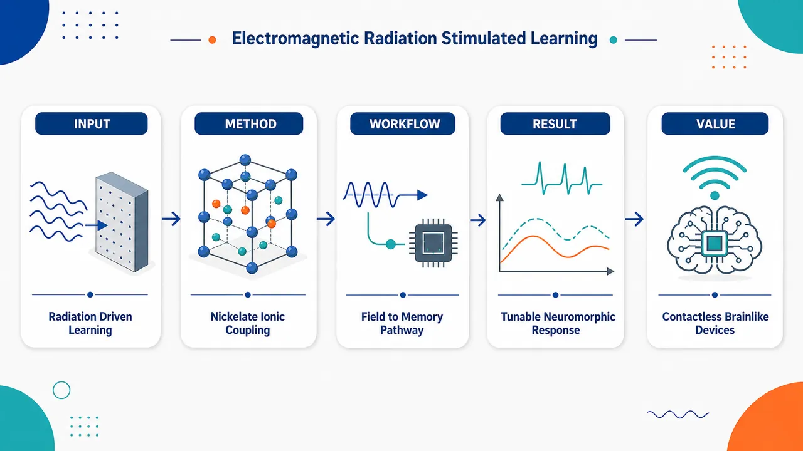
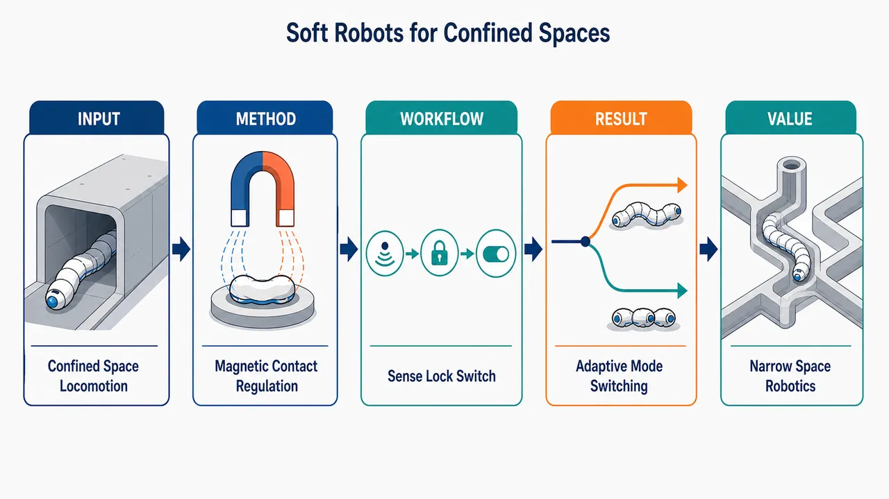
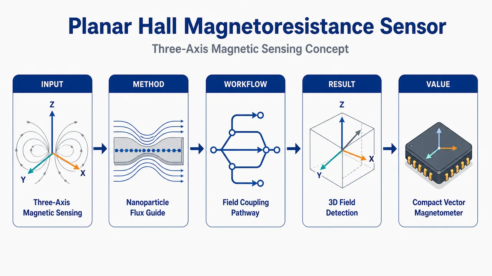
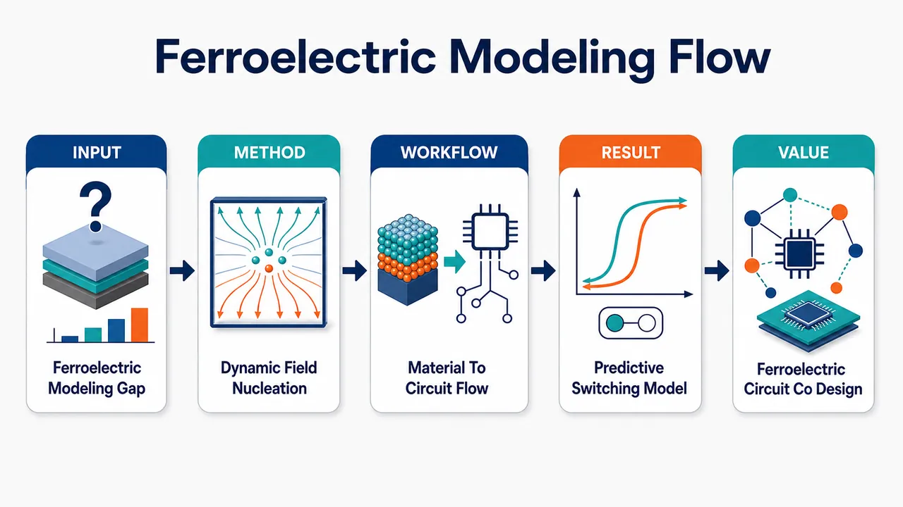

AI × Science 文献日报 2026/06/13
聚焦 AI × 物理 / 化学 / 材料交叉方向，自动过滤明显偏题的医学、教育与社会科学内容，并按主题重新排版，便于快速深读。
AI | 物理 | 化学 | 材料 | 交叉学科
原始候选 18 篇中，已剔除 0 篇明显偏离主线的内容，并从剩余 18 篇主线相关文献中精选 16 篇进入日报页，优先保留 AI × 物理 / 化学 / 材料交叉与关键计算方法工作。
核心关注（ML × ferro / 凝聚态）
4 篇今日实质推进集中在“搜索—物理模型—器件映射”三条链路：Al-Li 合金用多目标主动学习压缩成分/工艺试错，铁电动态场模型把极化成核-生长动力学接到电路级预测。NbOI2、CrI3、CrSBr、BaTiO3 这类常见二维铁电/磁性/钙钛矿基准体系在摘要中未被明确点名，第二篇仅给出二维拓扑铁电半金属与巨体光伏效应的物理方向。方法层面也未披露 equivariant GNN、MACE、NEP、DFT+U 等可复现实作细节，因而本日更像是主动学习与可解释动力学模型进入材料设计流程，而非新势函数或新第一性原理数据集的发布。
-
01主动学习优化 Al-Li 合金力学性能Enhancing mechanical properties of Al-Li alloys via multi-objective active learning optimization
📄 摘要：面向 Al-Li 合金力学性能，采用多目标主动学习进行成分或工艺空间搜索；摘要未给出训练集规模、目标函数和性能数值，仅表明以计算材料方法同时优化多项机械指标。
💡 亮点：Al-Li 合金被置于多目标主动学习框架中优化力学性能。该工作对应轻质结构合金的 AI 闭环设计，核心价值在于减少试错并处理多性能权衡。
📐 方法要点：多目标主动学习搜索 Al-Li 成分/工艺空间。
🔗 相关工作关联：呼应贝叶斯优化、Pareto 前沿、CALPHAD-ML、合金强韧化设计。
💡 对你方向的启示：适合把实验成本、热处理约束和力学指标共同写入采集函数。
-
02二维拓扑铁电半金属巨体光伏效应Giant Bulk Photovoltaic Effect in Two‐Dimensional Topological Ferroelectric Semimetal
📄 摘要：体系为二维拓扑铁电半金属，目标现象是巨体光伏效应；公开摘要未列材料名称、光电流数值或计算细节，但题名指向拓扑电子结构、铁电极化与非中心对称光响应的耦合。
💡 亮点：二维拓扑铁电半金属中出现巨体光伏效应。拓扑能带与可翻转极化的结合，使低维非线性光电响应成为可设计的凝聚态功能。
📐 方法要点：二维拓扑铁电半金属中耦合极化、拓扑能带与体光伏响应。
🔗 相关工作关联：呼应 shift current、Berry 曲率、二维铁电、非中心对称拓扑材料。
💡 对你方向的启示：ML 筛选应同时约束极化、能带交叉、对称性和光电流张量。
-
03铁电动态场成核生长协同设计模型Ferroelectric Dynamic‐Field‐Driven Nucleation and Growth Model for Predictive Materials‐To‐Circuit Co‐Design
📄 摘要：提出铁电动态场驱动的成核与生长模型，用于从材料参数预测到电路层级协同设计；摘要未给出材料体系、方程参数或器件误差，但重点在极化翻转动力学的可预测建模。
💡 亮点：铁电翻转被描述为动态场驱动的成核和生长过程。模型把材料动力学接入电路设计，有利于铁电存储和逻辑器件的跨尺度预测。
📐 方法要点：动态场驱动的铁电成核-生长模型连接材料参数到电路。
🔗 相关工作关联：呼应 KAI 翻转、相场模型、Landau-Khalatnikov、FeFET 紧凑模型。
💡 对你方向的启示：可把畴动力学参数做成可学习先验，用于器件-电路协同优化。
-
04TEG-VRPTW 混合量子经典架构TEG-VRPTW: A Hybrid Quantum-Classical Architecture with Temporal Edge-Gating and Amplitude-Encoded Quantum Bridge
📄 摘要：针对带时间窗车辆路径问题，提出时间边门控机制，用时间余量显式编码边可行性，修正传统 GNN 各向同性注意力对时间窗不敏感的问题；量子桥以振幅编码作为概念验证。
💡 亮点：TEG 将时间余量注入 GNN 消息传递，直接约束路径可行边。振幅编码量子桥展示混合量子经典优化接口，对科学调度和组合优化建模有参考价值。
📐 方法要点：时间边门控 GNN 显式编码时间窗可行性，接振幅编码量子桥。
🔗 相关工作关联：呼应时序图神经网络、注意力偏置、组合优化、量子机器学习。
💡 对你方向的启示：给凝聚态动态图建模的启发是把动力学可行域直接门控到边权。
今日摘要
总览：今日 16 篇覆盖合金主动学习优化、二维拓扑铁电光伏、铁电器件建模、强关联氧化物、磁软体机器人、电催化与量子计量。代表性工作包括 Al-Li 合金多目标主动学习、二维拓扑铁电半金属巨体光伏效应、Ba3CeRu2O9 中自旋轨道纠缠二聚体单态，以及基于 Th-229 的核钟演示。
热点：材料设计继续向“模型—实验—器件”闭环推进，主动学习、神经网络、响应面法和图神经网络被用于合金、混凝土和路径优化等多目标问题。铁电与界面工程成为电子态调控热点，方向从二维体光伏扩展到铁电材料到电路协同建模、无栅量子态操控。强关联体系关注电荷涨落、Mott/团簇 Mott 边界与自旋轨道纠缠对低能电子态的重构。功能材料方面，磁化 3D 打印、磁自锁软机器人、平面霍尔传感器和自旋态调控电催化显示出结构—自旋—性能耦合的共同逻辑。
今日文献
16 篇 · 9 含图深析-
01
📊 含图深析
📄 摘要：针对带时间窗车辆路径问题，提出时间边门控机制，用时间余量显式编码边可行性，修正传统 GNN 各向同性注意力对时间窗不敏感的问题；量子桥以振幅编码作为概念验证。
💡 亮点：TEG 将时间余量注入 GNN 消息传递，直接约束路径可行边。振幅编码量子桥展示混合量子经典优化接口，对科学调度和组合优化建模有参考价值。
📖 展开分析 + 配图

研究问题带时间窗车辆路径问题（VRPTW）中，车辆不仅要规划最短或低成本路线，还必须在每个客户允许的时间窗内到达；普通 GNN 的各向同性注意力容易把所有边近似同等传播，难以突出“早到、迟到、等待、不可行边”等时间约束信息，导致路径建模对时序可行性不敏感。创新方法提出 TEG-VRPTW 量子—经典混合架构：用“时间边门控”像交通信号灯一样根据时间窗约束筛选和调节边信息传播，让可行边增强、风险边减弱；再用“振幅编码量子桥”把经典图表示压缩映射到量子态空间，使经典 GNN 与量子表示/量子计算模块连接，形成时间约束感知的混合优化模型。工作流程输入客户节点、车辆路径图、边距离/成本、服务时间与时间窗信息；构建 VRPTW 图结构；时间边门控模块根据到达时间、等待时间和时间窗可行性对边赋权；经典 GNN 聚合被门控后的时序边特征；振幅编码量子桥将经典特征嵌入量子表示；量子—经典模块联合更新路径表示；输出更符合时间窗约束的车辆访问顺序或路径决策。关键结果论文摘要层面明确给出一种面向 VRPTW 的时间约束感知量子—经典架构，并指出其目标是缓解普通 GNN 忽略时间窗约束的问题；但当前内容未提供具体实验设置、对比基线、求解质量、可行率、运行时间或泛化性能的数值提升，因此可视化时应呈现为“方法性改进与预期优势”，而非已验证的量化性能突破。应用价值该研究可用于需要严格时间窗约束的物流配送、冷链运输、城市即时配送、上门服务调度和车队路径规划；通过让模型显式感知时间可行边，并探索量子—经典融合表示，有望提升复杂约束路径优化中的可行路线生成能力和未来智能调度系统的建模扩展性。核心概览
本文面向带时间窗车辆路径问题（VRPTW），提出一种混合量子-经典架构 TEG-VRPTW，结合时间边门控与振幅编码量子桥，以增强模型对时间可行性约束的建模能力。
方法要点
- 将研究对象限定为带时间窗车辆路径问题（VRPTW），属于组合优化与智能路径规划方向。
- 构建混合量子-经典架构，用于处理 VRPTW 中的复杂约束信息。
- 引入时间边门控（Temporal Edge-Gating），用于增强边表示或边传播过程中对时间窗可行性的感知。
- 使用振幅编码量子桥（Amplitude-Encoded Quantum Bridge），将经典表示与量子模块连接；具体编码方式与电路结构摘要未详述。
- 目标是缓解传统 GNN 对时间可行性约束不敏感的问题。
关键结果
- 摘要明确声称该架构旨在缓解传统 GNN 对时间可行性约束不敏感的问题。
- 摘要未详述实验设置、对比基线、性能指标或具体数值结果。
- 摘要未说明该方法是否在真实数据集或标准 VRPTW benchmark 上取得优于现有方法的效果。
创新性判断
- 可能的新颖点在于将“时间边门控”显式引入 VRPTW 建模，使图结构学习更关注时间窗可行性约束；但具体机制摘要未详述，创新强度无法确定。
- 另一个潜在新颖点是采用“振幅编码量子桥”连接经典 GNN/优化框架与量子计算模块，体现混合量子-经典求解思路；但量子模块如何带来优势摘要未说明。
- 相比一般 GNN 求解 VRPTW 的工作，该方法可能更强调时间约束敏感性与量子增强表示；这一判断基于摘要表述，仍具有不确定性。
-
02
📊 含图深析
📄 摘要：面向 Al-Li 合金力学性能，采用多目标主动学习进行成分或工艺空间搜索；摘要未给出训练集规模、目标函数和性能数值，仅表明以计算材料方法同时优化多项机械指标。
💡 亮点：Al-Li 合金被置于多目标主动学习框架中优化力学性能。该工作对应轻质结构合金的 AI 闭环设计，核心价值在于减少试错并处理多性能权衡。
📖 展开分析 + 配图

研究问题如何在庞大的Al-Li合金成分与热/加工工艺组合空间中，避免高成本经验试错，同时找到强度、塑性等多项力学性能均衡提升的高性能合金方案。创新方法将多目标主动学习引入Al-Li合金设计，把“成分+工艺参数”作为联合搜索地图，用模型预测性能并主动挑选最有价值的下一批候选，在性能权衡前沿上迭代逼近最优合金；Aha点是用少量实验/计算样本驱动多性能协同优化，而非单一指标或盲目试错。工作流程输入已有Al-Li合金成分、工艺参数与力学性能数据；训练预测模型评估候选合金；在成分/工艺空间中进行多目标主动学习筛选；优先选择兼具高潜力与信息增益的候选；通过实验或计算反馈更新数据集；循环迭代后输出位于强度-延伸率等性能权衡前沿的高性能Al-Li合金候选。关键结果该方法可在有限试错次数下同时优化Al-Li合金的多项力学性能，并筛选出潜在高性能候选；论文摘要强调其能降低传统实验筛选成本，但具体性能提升幅度、候选数量和实物验证细节未详述。应用价值为轻质高强Al-Li合金研发提供数据驱动设计路线，可用于航空航天等对减重、高强度和可靠塑性有需求的结构材料开发，帮助研发人员更快定位值得制备验证的合金成分与工艺窗口。核心概览
该论文属于材料信息学/合金设计方向，针对 Al-Li 合金，利用多目标主动学习在成分与工艺空间中优化筛选，以提升力学性能，并强调实验—计算闭环优化。
方法要点
- 采用多目标主动学习方法，对 Al-Li 合金的成分/工艺进行优化。
- 优化目标面向力学性能提升，具体性能指标摘要未详述。
- 研究框架包含实验与计算之间的闭环筛选与迭代优化。
- 可能涉及候选合金方案的预测、选择与实验验证，但具体模型、特征、采样策略摘要未详述。
关键结果
- 摘要明确指出，该方法用于提升 Al-Li 合金力学性能。
- 论文结论指向多目标主动学习可支持成分/工艺的高效筛选。
- 研究强调实验—计算闭环在 Al-Li 合金优化中的作用。
- 具体力学性能提升幅度、最优成分、工艺参数及实验验证数量摘要未详述。
创新性判断
- 可能的新颖点在于将多目标主动学习用于 Al-Li 合金的成分—工艺协同优化，而不仅是单一性能或单一变量优化。
- 另一潜在创新是构建实验—计算闭环筛选流程，以提高合金开发效率。
- 相对传统试错式合金设计，该工作可能体现了数据驱动与主动学习在低实验成本下搜索高性能合金的优势。
- 但由于摘要信息极少，具体算法创新、数据规模、性能优势和与已有方法的差异均无法确定，需阅读全文确认。
-
03
📊 含图深析
📄 摘要：体系为二维拓扑铁电半金属，目标现象是巨体光伏效应；公开摘要未列材料名称、光电流数值或计算细节，但题名指向拓扑电子结构、铁电极化与非中心对称光响应的耦合。
💡 亮点：二维拓扑铁电半金属中出现巨体光伏效应。拓扑能带与可翻转极化的结合，使低维非线性光电响应成为可设计的凝聚态功能。
📖 展开分析 + 配图

研究问题如何在二维材料中利用内禀铁电极化和拓扑半金属能带，产生无需 p-n 结的强体光伏电流，并突破传统铁电光伏响应较弱的限制。创新方法将“二维拓扑结构、铁电反演对称性破缺、半金属能带”整合到同一材料平台：铁电极化像内建电场一样定向分离光生载流子，半金属能带提供活跃的低能电子通道，共同放大体光伏效应。工作流程选取二维拓扑铁电半金属体系 → 分析铁电极化方向与反演对称性破缺 → 考察半金属能带和拓扑特征 → 光照激发非线性光电响应 → 在无 p-n 结条件下输出定向体光伏电流。关键结果二维拓扑铁电半金属被指出可产生“巨”体光伏效应；强响应来自铁电极化与半金属能带的协同作用，使其成为低维无结光电流产生的潜在高性能平台。应用价值为超薄、无结、自驱动光电探测器和新型铁电光伏器件提供材料设计思路，可用于低维光电转换、片上光电集成和极化可调光电流器件。核心概览
该论文报道二维拓扑铁电半金属中的巨体光伏效应，属于二维拓扑材料、铁电光电响应与体光伏效应研究方向。
方法要点
- 研究对象是同时具有拓扑性质、铁电性和半金属性的二维材料体系。
- 论文关注该体系中的体光伏效应，尤其是“巨”体光伏响应。
- 摘要未详述具体理论模型、第一性原理计算方法、实验制备或测量方案。
- 摘要未给出光电流、光伏张量、响应谱或材料结构等具体技术细节。
关键结果
- 在二维拓扑铁电半金属中报道了巨体光伏效应。
- 该体系兼具拓扑、铁电和半金属性三类特征。
- 具体光电流大小、响应强度、频率范围、偏振依赖或与已有材料的定量对比，摘要未详述。
创新性判断
- 可能的新颖点在于将“二维拓扑”“铁电性”“半金属性”和“体光伏效应”结合到同一材料平台中。
- 相比常规铁电光伏材料，该工作可能强调拓扑/半金属性对体光伏响应的增强作用，但摘要未说明具体机制。
- “巨体光伏效应”的定量优势和物理来源仍无法仅凭摘要判断，需全文中的计算或实验数据支持。
-
04
📊 含图深析
📄 摘要：利用打印过程中的磁化，在磁流变弹性体内写入非均匀磁分布，从而获得各向异性驱动能力；公开摘要未列颗粒含量、磁场强度和形变幅度，重点是制造时同步构筑磁性剖面。
💡 亮点：磁流变弹性体在 3D 打印过程中完成空间选择性磁化。异质磁剖面直接决定各向异性驱动，为可编程软执行器制造提供工艺路径。
📖 展开分析 + 配图

研究问题如何在3D打印磁流变弹性体时，不依赖后处理统一磁化，而是在软结构内部直接构建空间不均一的磁性分布，使同一打印体在外加磁场下产生方向相关、区域差异化的各向异性驱动变形。创新方法提出“过程内同步磁化”策略：在磁流变弹性体挤出/成形的同时施加可控磁场，使磁性颗粒或磁畴在打印路径中被即时定向与磁化，形成异质磁性轮廓。Aha点在于把磁化从打印后的整体处理，前移并嵌入到逐层制造过程中，从而把磁性编码变成3D打印的一部分。工作流程输入磁流变弹性体打印墨水与目标驱动设计；在3D打印路径中逐层沉积材料；打印过程中同步施加磁场并调控局部磁化方向/强度；材料固化后获得带有非均匀磁性分布的软结构；在外部磁场刺激下，不同区域产生不同磁响应，最终输出弯曲、扭转或方向选择性变形等各向异性驱动行为。关键结果成功打印出具有异质磁性轮廓的磁流变弹性体软结构；结构内部不再是单一均匀磁化，而是具有空间差异化磁响应；在磁场作用下表现出各向异性驱动能力，证明过程内磁化可用于编程软体结构的方向性运动。摘要未给出具体性能数值或对照提升幅度。应用价值该研究为磁响应软机器人、4D打印执行器、可编程变形结构和智能柔性器件提供新的制造路径；通过在打印时直接写入磁性分布，可减少后磁化步骤，提高复杂磁驱动模式的设计自由度，适合制造具有定向弯曲、局部响应和多模式运动能力的软材料系统。核心概览
该论文属于磁响应软材料/4D 打印方向，研究在磁流变弹性体 3D 打印过程中进行原位磁化，以获得非均匀磁性分布，并实现各向异性驱动响应。
方法要点
- 在磁流变弹性体（MRE）的 3D 打印过程中引入原位磁化步骤。
- 通过打印过程中的磁化调控，使材料内部形成非均匀磁性分布。
- 利用所得非均匀磁性结构产生方向相关的、各向异性的驱动行为。
- 具体打印参数、磁化场强、材料配方、结构设计和表征方法摘要未详述。
关键结果
- 成功在 3D 打印过程中实现磁流变弹性体的原位磁化。
- 制备出的材料具有非均匀磁性分布。
- 该非均匀磁性分布使材料表现出各向异性驱动响应。
- 驱动性能的定量指标、对照实验和应用展示摘要未详述。
创新性判断
- 可能的新颖点在于将“原位磁化”直接集成到磁流变弹性体的 3D 打印过程中，而不是打印后再统一磁化。
- 该方法可能允许在同一打印构件中构建空间异质的磁性分布，从而实现更复杂或方向选择性的驱动。
- 相比常规均匀磁化磁响应弹性体，该工作的新意可能体现在“异质磁性轮廓 + 各向异性驱动”的一体化制造上。
- 由于摘要信息极少，无法确定其相对于已有 4D 打印、磁编程软机器人或磁性复合弹性体工作的具体突破程度。
-
05
📊 含图深析
📄 摘要：在电子掺杂 Nd2−xCexCuO4 中结合角分辨光电子能谱与角分辨反光电子能谱，同时探测占据和未占据态；观察到由量子电荷涨落驱动的新电子态，指向电荷自由度参与铜氧化物低能相互作用。
💡 亮点：Nd2−xCexCuO4 的占据态和未占据态被联合解析，出现与量子电荷涨落相关的新谱特征。结果把电荷涨落纳入电子掺杂铜氧化物配对相互作用讨论。
📖 展开分析 + 配图

研究问题电子掺杂铜氧化物超导体中，占据态与未占据态为何会在低能电子结构中出现：它们是普通能带演化的结果，还是由强关联体系中的量子电荷涨落主动驱动形成？创新方法将占据电子态与未占据电子态放在同一物理图景中解释，核心 Aha 点是：用“量子电荷涨落”作为共同驱动力，而不是只依赖自旋涨落、声子耦合或常规能带填充来解释电子态的 emergence，并强调电荷自由度在电子—玻色子相互作用中的主动角色。工作流程以电子掺杂铜氧化物超导体为对象，观察占据态与未占据态的电子结构演化；比较其随电子掺杂和强关联环境变化而出现的特征；将这些新生电子态与量子电荷涨落联系起来；最终构建“电荷涨落驱动电子态形成”的解释框架。关键结果研究指出，在电子掺杂铜氧化物超导体中会同时出现占据与未占据电子态；这些电子态的形成可归因于量子电荷涨落；结果暗示电荷自由度不仅是背景变量，而是参与电子—玻色子耦合并重塑低能电子结构的关键因素。应用价值该研究为理解电子掺杂铜氧化物高温超导体的低能电子结构提供了新的视觉化物理图像：电荷涨落像动态波纹一样生成电子态；这有助于重新评估强关联超导中的配对机制、电子—玻色子耦合来源，以及未来调控高温超导材料电子性质的方向。核心概览
该论文属电子掺杂铜氧化物超导体谱学研究，关注占据/未占据电子态的涌现及其与量子电荷涨落的关系。
方法要点
- 采用谱学手段研究电子掺杂铜氧化物超导体中的电子态演化。
- 同时关注占据态与未占据态，而非仅研究费米能级以下电子结构。
- 将观测到的电子态涌现与电子—玻色子相互作用联系起来分析。
- 摘要未详述具体实验技术、样品体系、掺杂范围、温度条件或数据分析方法。
关键结果
- 在电子掺杂铜氧化物超导体中观察或研究了占据与未占据电子态的涌现。
- 论文结论指向：量子电荷涨落参与了电子—玻色子相互作用。
- 摘要未详述具体谱学特征、能量尺度、动量空间位置或定量结果。
创新性判断
- 可能的新颖点在于同时考察占据态与未占据态的涌现，从而更完整地刻画电子掺杂铜氧化物中的电子结构演化；但具体实现方式摘要未详述。
- 将量子电荷涨落与电子—玻色子相互作用相联系，可能为理解电子掺杂铜氧化物超导机制提供新的实验线索；该判断基于摘要表述，仍具不确定性。
- 若该工作确实通过谱学直接关联未占据态与电荷涨落，则相对常规只关注占据态的谱学研究可能具有方法或视角上的创新；但摘要未提供足够细节确认其独特性。
-
06
📄 摘要：体系为钙钛矿镍酸盐，题名指向电磁辐射诱导或调制的学习行为；公开摘要未给出具体成分、频率、脉冲协议或响应指标，核心在关联氧化物中实现刺激依赖可塑性。
💡 亮点：钙钛矿镍酸盐被用于电磁辐射刺激下的类学习响应。该方向把关联氧化物相变和神经形态可塑性连接起来。
📖 展开分析 + 配图

研究问题钙钛矿镍酸盐能否在电磁辐射这一非接触外场刺激下，产生类似神经系统“学习”的可调响应；核心画面可表现为辐射波束照射材料薄膜，内部电子云与离子点阵同步重排，最终形成记忆/学习状态。创新方法将电磁辐射作为神经形态调控信号，激发钙钛矿镍酸盐中电子响应与离子响应的耦合变化，把材料的外场可调输运行为转化为学习功能；Aha 点是用“辐射场”而非传统电压、电流或化学刺激来驱动材料学习。工作流程输入为外加电磁辐射信号；辐射作用于钙钛矿镍酸盐材料；材料内部发生电子态变化与离子迁移/重排；这些可调响应被映射为突触样权重变化或学习行为；输出为具有神经形态功能潜力的可调材料状态。关键结果论文表明钙钛矿镍酸盐可在电磁辐射刺激下展现学习行为探索价值，外场能够诱导可调电子/离子响应，并显示出作为神经形态材料或器件平台的潜力；摘要未给出具体性能数值、响应强度或循环稳定性指标。应用价值该研究为非接触、场驱动的神经形态材料提供新思路，有望用于辐射感知型学习器件、自适应电子系统、类脑计算硬件以及可由环境电磁信号直接调控的智能材料平台。核心概览
该论文研究钙钛矿镍酸盐在电磁辐射刺激下的“学习”行为，方向属于氧化物电子材料、忆阻/类神经形态器件与辐射调控输运性质交叉领域。
方法要点
- 使用钙钛矿镍酸盐作为实验材料体系。
- 通过电磁辐射作为外部刺激来调制材料状态。
- 关注材料的电输运或某种可表征的态变量随辐射历史发生变化。
- 将这种历史依赖响应解释为面向类神经形态适应行为的“学习”效应。
- 具体样品制备、辐射频段、测试电路、表征手段和数据分析方法：摘要未详述。
关键结果
- 摘要明确表明，钙钛矿镍酸盐可用于电磁辐射刺激学习实验。
- 题名与摘要信息显示，该材料的电输运或态变量可能受电磁辐射历史调制。
- 该现象被指向类神经形态适应行为的实现或模拟。
- 是否展示了可重复性、保持时间、学习/遗忘曲线、能耗或器件性能指标：摘要未详述。
创新性判断
- 可能的新颖点在于将“电磁辐射刺激”而非传统电压/电流脉冲作为学习输入，用于调控钙钛矿镍酸盐的状态；但具体相对已有工作的突破幅度摘要未详述。
- 钙钛矿镍酸盐本身具有强关联电子特性，若其辐射历史可调输运被用于类神经形态功能，可能提供一种材料内禀适应行为的新路径；这一判断基于摘要和题名，仍有不确定性。
- 该工作可能强调材料层面的“刺激—响应—记忆/适应”机制，而非单纯器件电路实现；但具体机制摘要未详述。
-
07
📊 含图深析
📄 摘要：面向狭窄空间运动，设计具磁自锁和接触感知的双模式运动调控软机器人；公开摘要未给出尺寸、磁场参数或速度，核心机制是利用磁耦合锁定状态并通过接触反馈切换运动模式。
💡 亮点：磁自锁与接触感知被整合到受限空间软机器人中。双模式调控使机器人可在狭窄环境内适应接触约束和运动切换。
📖 展开分析 + 配图

研究问题软机器人在狭窄管道、缝隙、障碍密集等受限空间中，容易因空间压迫和环境接触而卡滞，难以稳定保持姿态、及时切换运动状态并根据碰撞/接触反馈调整行为。创新方法提出“磁自锁 + 接触感知”的双模式运动调控方法：用磁吸附/磁锁定结构像机械扣一样保持特定形态或运动状态，再利用接触传感反馈触发行为调整，实现软机器人在受限空间中的自主状态切换。工作流程输入狭窄环境与外部驱动信号；软机器人进入受限通道并发生壁面接触；接触感知单元检测挤压、碰撞或贴壁状态；控制系统判断当前环境约束；磁自锁机构锁定或释放身体构型；机器人在两种运动模式间切换，完成通过、避障或姿态调整。关键结果机器人能够在受限空间内完成运动状态切换，并借助接触反馈调整自身行为；磁自锁机制帮助维持稳定构型，接触感知提高对复杂狭窄环境的适应能力，验证了双模式运动调控框架的可行性。应用价值可用于管道巡检、狭缝探测、灾后搜救、医疗腔道机器人和工业设备内部维护等场景，使软机器人像柔性生物体一样在狭小空间中贴壁前进、感知接触并切换运动策略。核心概览
该论文属于仿生软机器人与受限空间运动控制方向，提出一种结合磁自锁与接触感知的软机器人体系，用于在狭窄空间中实现双模式运动调控与状态切换。
方法要点
- 采用仿生软机器人设计，面向狭窄或受限环境中的穿行任务。
- 引入磁自锁机制，用于实现或维持某种运动/结构状态；具体结构与工作原理摘要未详述。
- 结合接触感知能力，使机器人能够感知与环境的接触状态；传感实现方式摘要未详述。
- 通过磁自锁与接触感知协同，实现“双模式运动调控”；两种模式的具体定义摘要未详述。
- 体系强调在受限环境中进行状态切换，但切换策略、控制算法和实验验证摘要未详述。
关键结果
- 摘要明确指出该机器人能够在狭窄空间中实现双模式运动调控。
- 该体系可用于受限环境穿行与状态切换。
- 磁自锁与接触感知被作为实现上述能力的核心机制。
- 摘要未提供具体性能指标、实验场景、对比结果或量化数据。
创新性判断
- 可能的新颖点在于将“磁自锁”和“接触感知”集成到仿生软机器人中，用于狭窄空间下的双模式运动调控。
- 相比常规软机器人运动控制，该工作可能更强调在受限环境中通过自锁机制保持状态，并通过接触反馈辅助模式切换；但具体优于哪些已有方法，摘要未详述。
- “双模式运动调控”可能是论文的核心创新表述，但两种运动模式及其调控机制尚不明确，因此创新性强弱需依赖全文验证。
-
08
📊 含图深析
📄 摘要：开发三轴平面霍尔磁阻传感器，并引入超顺磁纳米颗粒基磁通导向结构实现三维磁场分量检测；摘要未列灵敏度、噪声和线性范围，重点在平面器件的三轴读出架构。
💡 亮点：超顺磁纳米颗粒磁通导向器被用于平面霍尔传感器。该结构把平面磁阻读出扩展到三轴磁场检测。
📖 展开分析 + 配图

研究问题传统平面霍尔磁阻器件主要对平面内特定方向磁场敏感，难以直接、紧凑地获取三维磁场的三个分量；核心问题是如何让单一平面型磁阻传感平台具备三轴磁场感知能力。创新方法在平面霍尔磁阻器件上引入由超顺磁纳米颗粒构成的磁通量导向结构，像“磁场透镜/导流桥”一样重新引导外部三维磁力线，把不同方向的磁场分量耦合到平面霍尔检测单元中，实现三轴探测。工作流程外部三维磁场进入传感器区域 → 超顺磁纳米颗粒通量导向结构聚集并改变磁力线路径 → x、y、z 三个方向的磁场分量被转换/耦合到平面霍尔磁阻器件可感知的方向 → 器件产生平面霍尔电压响应 → 解析得到三轴磁场分量信息。关键结果成功开发出一种三轴平面霍尔磁阻传感器；实验/设计表明，超顺磁纳米颗粒基通量导向结构可使原本平面型霍尔磁阻器件实现三维磁场分量探测。摘要未给出具体灵敏度、噪声、线性范围或轴间串扰数值。应用价值该研究为小型化、平面化三维磁场传感器提供了新器件方案，可用于空间磁场矢量测量、电子罗盘、位置/姿态检测、微型磁场成像以及需要紧凑三轴磁传感的集成系统。核心概览
本文属于磁传感器/磁阻器件方向，开发了一种三轴平面霍尔磁阻传感器，通过超顺磁纳米颗粒基磁通导引结构，使平面器件能够检测三维磁场分量。
方法要点
- 采用平面霍尔磁阻（Planar Hall Magnetoresistance）传感机制构建磁场传感器。
- 引入超顺磁纳米颗粒基磁通导引结构，用于调控或引导外部磁场。
- 目标是在平面器件架构中实现三轴，即三维磁场分量检测。
- 具体器件结构、材料配方、制备工艺、信号解耦方法等摘要未详述。
关键结果
- 成功开发了三轴平面霍尔磁阻传感器。
- 该传感器利用超顺磁纳米颗粒基磁通导引结构，实现了平面器件中的三维磁场分量检测。
- 灵敏度、线性范围、噪声、轴间串扰、频率响应等性能指标摘要未详述。
创新性判断
- 可能的新颖点在于将超顺磁纳米颗粒基磁通导引结构与平面霍尔磁阻传感器结合，用于三轴磁场检测。
- 相比常规平面磁阻器件通常更擅长检测面内磁场，该工作可能通过磁通导引实现了对三维磁场分量的获取；但具体优于现有方案的程度摘要未详述。
- 其创新性更偏向器件结构与磁通调控设计，而非摘要中可确认的新型物理机制；该判断基于摘要，存在不确定性。
-
09
📊 含图深析
📄 摘要：提出铁电动态场驱动的成核与生长模型，用于从材料参数预测到电路层级协同设计；摘要未给出材料体系、方程参数或器件误差，但重点在极化翻转动力学的可预测建模。
💡 亮点：铁电翻转被描述为动态场驱动的成核和生长过程。模型把材料动力学接入电路设计，有利于铁电存储和逻辑器件的跨尺度预测。
📖 展开分析 + 配图

研究问题铁电材料的极化翻转由微观成核与畴生长主导，但传统模型难以把这种动态开关行为直接映射到器件与电路仿真中，导致材料参数、器件响应和电路性能之间缺少可预测的协同设计桥梁。创新方法提出“动态场驱动”的铁电成核与生长模型：用随时间和电场变化的驱动力描述铁电畴从成核、扩展到宏观极化翻转的过程，并将材料级开关动力学压缩为器件/电路级可调用的预测模型，核心 Aha 点是把铁电物理机制变成可用于电路设计的跨尺度模型。工作流程输入铁电材料开关特性与外加动态电场；模型计算局部成核概率和畴生长演化；进一步汇总为宏观极化、电荷、电压或电流响应；再嵌入器件/电路仿真环境；最终输出可预测的铁电器件行为和材料—电路协同设计结果。关键结果论文声称该模型能够支持预测性的材料到电路协同设计，并将铁电开关动力学转化为器件/电路级模型；具体材料体系、实验验证案例、模型精度、参数提取流程及相对既有模型的定量提升在所给内容中未详述。应用价值该研究可作为铁电存储器、负电容晶体管、铁电逻辑与新型低功耗电路的设计工具，使研究者能够从材料参数出发预估器件响应和电路性能，减少反复试错实验，加速铁电材料—器件—电路一体化优化。核心概览
该论文提出铁电动态场驱动的成核与生长模型，用于连接材料参数、畴演化和电路行为，服务于材料到电路的预测式协同设计。
方法要点
- 构建“动态场驱动”的铁电成核与生长模型。
- 将材料参数与铁电畴演化过程建立关联。
- 将畴演化进一步映射或耦合到电路行为层面。
- 面向材料—器件/电路协同设计，强调模型的预测能力。
关键结果
- 摘要明确称该模型能够连接材料参数、畴演化与电路行为。
- 摘要明确指出其目标是支持预测式材料到电路协同设计。
- 摘要未详述模型验证方式、实验/仿真结果、精度指标或适用材料体系。
创新性判断
- 可能的新颖点在于把铁电材料内部的动态成核与生长过程，直接纳入可服务电路级预测的建模框架中。
- 相比只关注材料层或器件层的铁电模型，该工作可能强调跨尺度连接：材料参数 → 畴演化 → 电路行为。
- “动态场驱动”可能是其区别于传统静态或经验型铁电模型的关键，但具体物理形式、方程和优势摘要未详述，无法进一步确认。
-
10
📄 摘要：在 Ni3S2 中结合金属自旋态调控和低结晶度结构，实现碱性水与海水中的高电流密度析氢；公开摘要未给出过电位、电流密度或稳定时间，核心是以电子自旋态和无序度协同提升 HER。
💡 亮点：Ni3S2 的金属自旋态与低结晶度被协同调控，用于碱性水和海水析氢。该策略把自旋电子结构纳入高电流电催化材料设计。
-
11
📄 摘要：研究 Ba3CeRu2O9 处于 Mott 与团簇 Mott 之间的电子关联状态；题名表明其基态包含自旋轨道纠缠的二聚体单态，公开摘要未给出谱学能标或交换参数。
💡 亮点：Ba3CeRu2O9 显示介于 Mott 与团簇 Mott 极限之间的自旋轨道纠缠二聚体单态。该体系为理解 4d/5d 氧化物中轨道、关联和团簇自由度耦合提供具体样本。
- 12
-
13
📄 摘要：Nature Communications 报道通过半金属 Bi 薄膜与二维半导体 MoS2 的界面工程，在无外加栅压条件下双向精确控制电子空间排布；关键信息是界面而非电压成为量子电子态调控旋钮。
💡 亮点：Bi 薄膜/MoS2 界面可在无栅压下双向操控电子空间分布。界面工程由此成为低功耗量子电子态重构手段。
-
14
📄 摘要：以 CoFe 普鲁士蓝类似物为 H2O2 电合成催化剂，通过调控金属自旋态打破活性与稳定性权衡；公开摘要未列电流效率、产率或循环寿命，重点在自旋态控制反应中间体和结构耐久性。
💡 亮点：CoFe PBA 的自旋态被用作 H2O2 电合成的性能调控变量。活性—稳定性权衡由电子自旋结构层面重新设计。
-
15
📄 摘要：围绕钙钛矿量子点表面化学状态与电致发光性能的关系展开，公开摘要未给出组分、配体、亮度或效率数值；核心问题是表面缺陷、配体和能级对发光器件表现的影响。
💡 亮点：钙钛矿量子点电致发光性能被追溯到表面化学状态。该关联有助于定位缺陷钝化和配体工程在量子点发光器件中的作用。
-
16
📄 摘要：以 ANN 和响应面法平衡聚丙烯纤维混凝土抗弯增强与坍落度损失。ANN 对抗弯强度变化和坍落度变化的 R2 分别为 0.934、0.852；RSM 分别为 0.885、0.896，用于确定最优 PPF 含量。
💡 亮点：PPF 混凝土配比通过 ANN 与 RSM 同时优化强度和和易性。ANN 更擅长预测抗弯变化，RSM 对坍落度拟合更高，体现工程材料的可解释数据驱动设计。